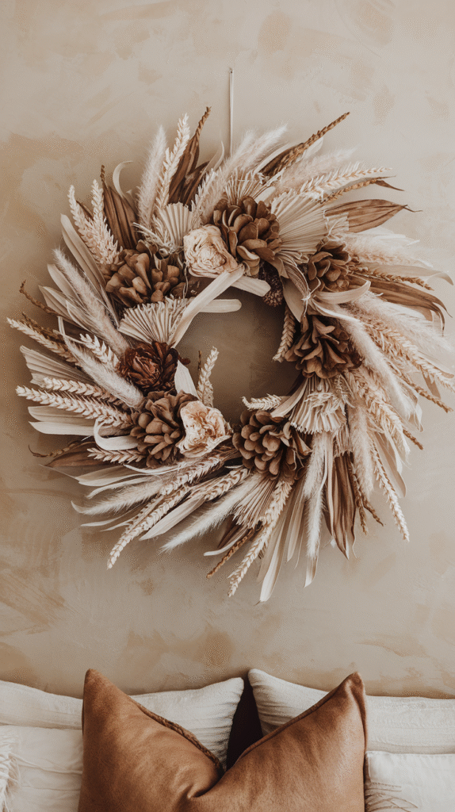
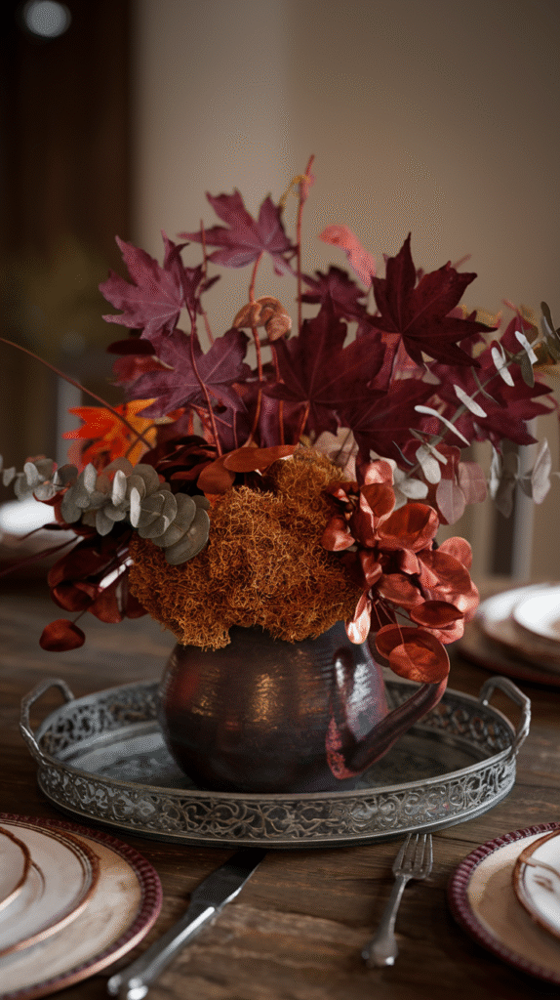
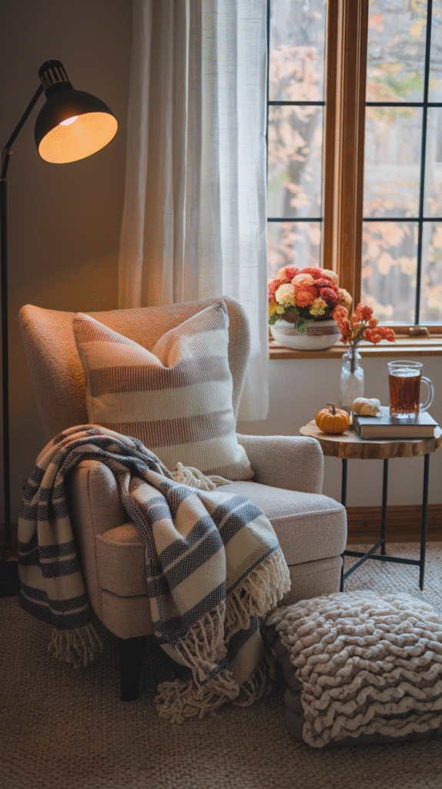
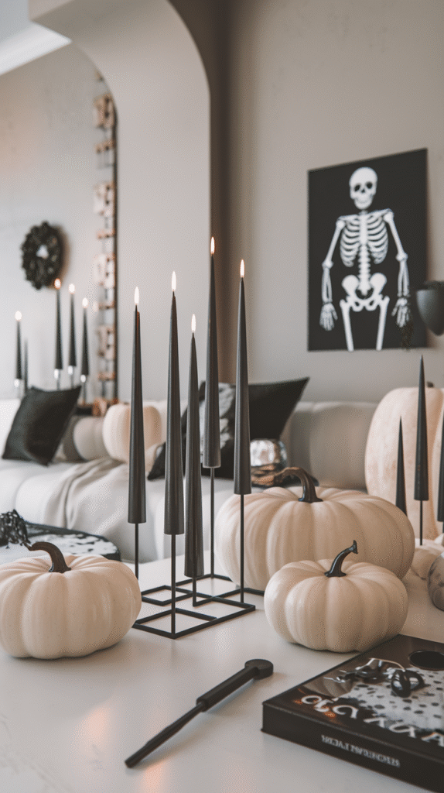
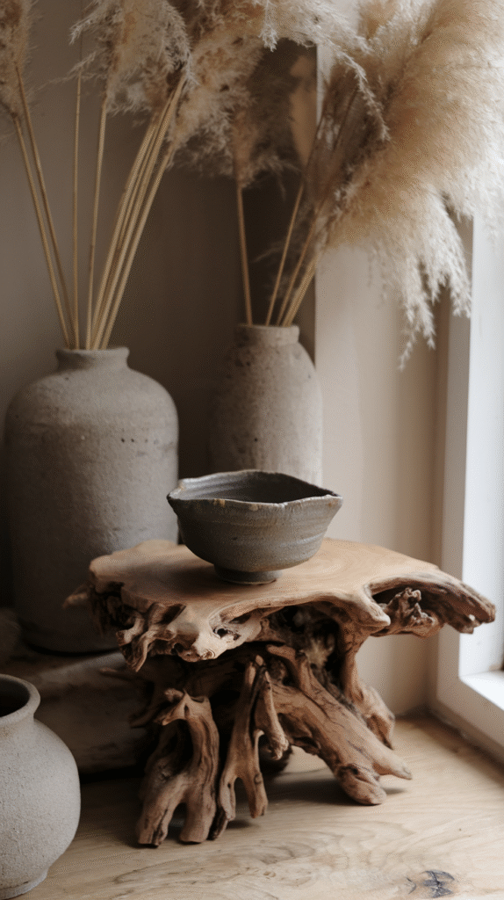
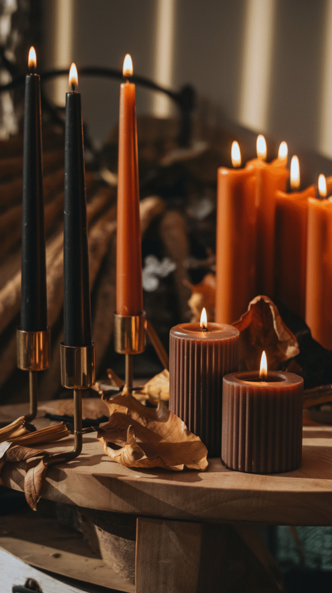
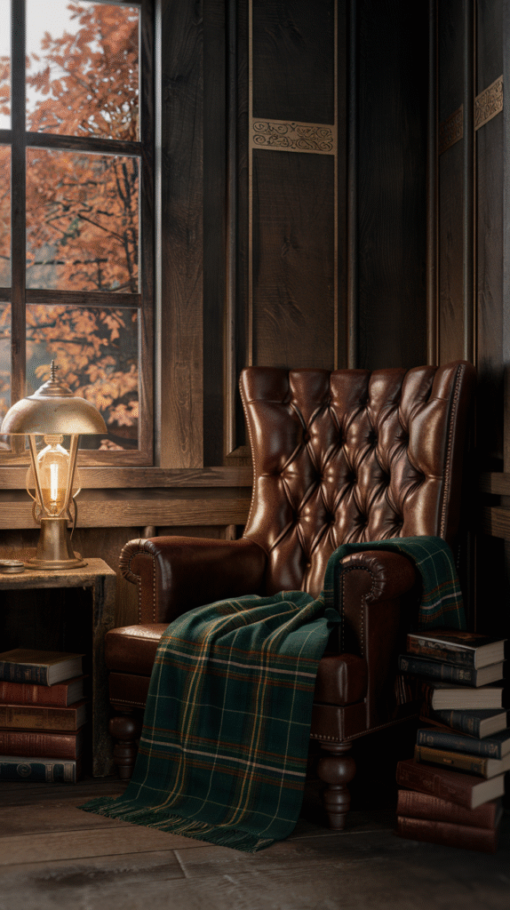
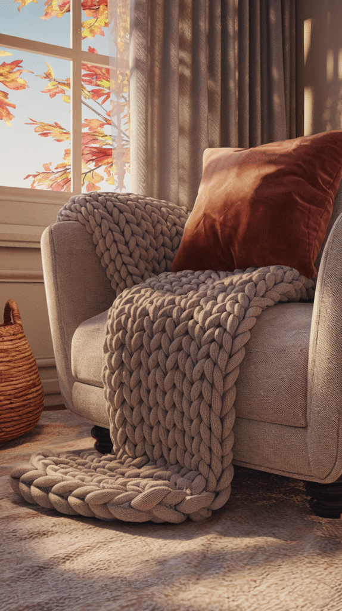
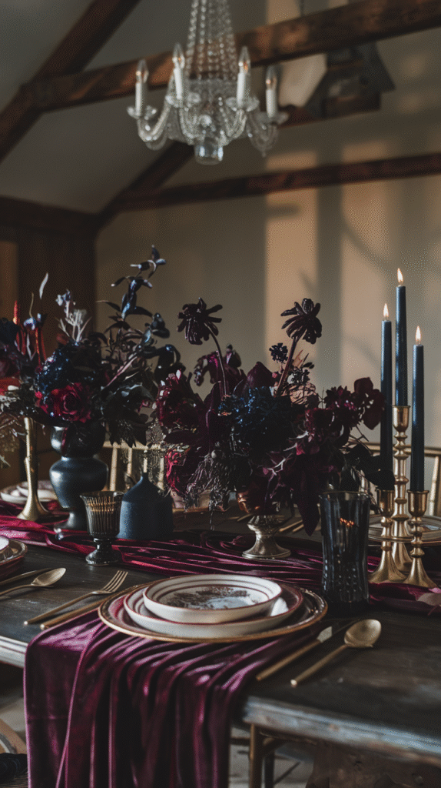
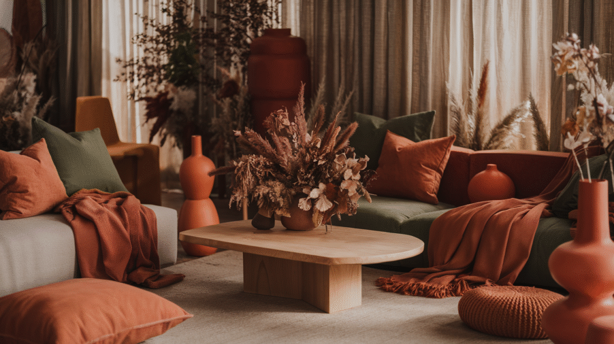

Fall decor repeats a few safe moves every year, pumpkins, plaid, warm candles.
These 10 are what's actually moving the aesthetic forward this year, beyond the usual seasonal defaults.

1. Statement Wreaths, Not Just Door Wreaths
Wreaths are showing up above mantels, on interior walls, and leaning against mirrors, well beyond their usual front-door role.
This trend treats the wreath as a genuine piece of seasonal wall art, not just an entryway signal that fall has arrived.

2. Faux Foliage That Actually Looks Good
Higher-quality artificial leaves and branches have improved enough that they're genuinely hard to distinguish from real foliage at a glance.
This matters most for anyone who wants fall greenery without the upkeep real branches and leaves demand over several weeks.

3. Cozy Corners Over Big Displays
One deliberately styled reading nook or window seat is replacing the instinct to decorate every surface in the house for fall.
This also tends to look more intentional in photos and in person, since all the effort concentrates into one genuinely considered spot.

4. Minimalist Halloween
A few well-chosen pieces, one striking pumpkin arrangement, a single piece of vintage-style spooky art, are replacing wall-to-wall Halloween decorating.
This approach lets Halloween decor coexist with the rest of a considered fall scheme, rather than overtaking it for one month.

5. Organic Shapes and Raw Materials
Hand-thrown ceramics, raw wood edges, and other deliberately imperfect, organic shapes are replacing sleek, uniform decor.
This pairs naturally with the earthy color trend, since both lean on the same appreciation for natural, unrefined material.

6. The Return of Candle Culture
Taper candles and candlesticks, not just scented jar candles, are having a genuine resurgence this year.
Grouping several candlesticks of varying heights together creates far more visual impact than a single candle placed alone.

7. Dark Academia Meets Cozy Cabin
Rich wood tones, vintage-style lamps, and a slightly scholarly, book-filled feel are blending with classic cabin warmth into one aesthetic.
This trend rewards a room that already has some vintage or well-worn pieces, rather than requiring a full new look.

8. Layered Textures for Real Coziness
Chunky knits, woven baskets, and nubby wool together create a tactile depth that a single cozy throw blanket alone can't.
The combination matters more than any individual piece, it's the layering itself that reads as genuinely cozy rather than simply seasonal.

9. Moody Florals
Deep burgundy, plum, and near-black floral prints are replacing the usual crisp autumn leaf motif on textiles and art.
This works especially well on a table runner or a few throw pillows, rather than committing to it as wallpaper or anything harder to change later.

10. Earthy Tones Are Taking Over
Rust, clay, and deep olive are replacing the brighter orange-and-gold fall palette that's dominated for years.
These tones also transition more easily into winter, which gives them real staying power beyond a single season.

Fall Decor, But Make It You
None of these 10 trends need to be adopted all at once, or even all in the same year.
Picking two or three that genuinely fit an existing room does more than chasing every trend on this list at once.
The goal was never a showroom. It's a room that still feels like the one lived in the rest of the year, just leaning a little warmer for a few months.